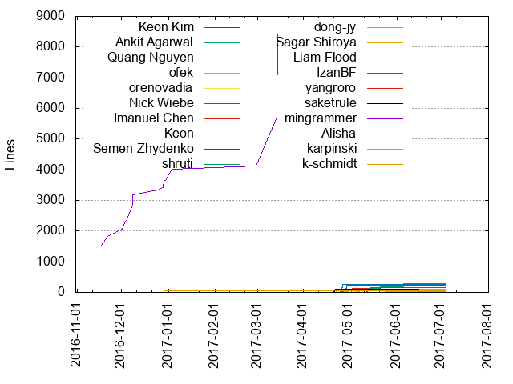
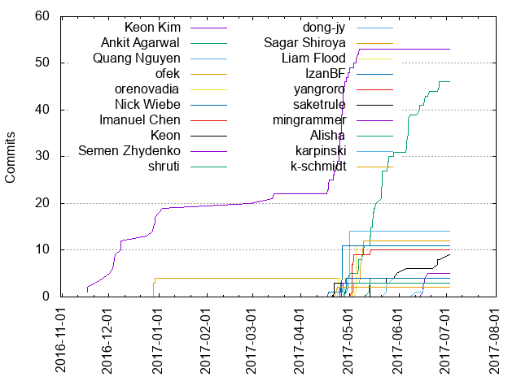

Authors
| Author | Commits (%) | + lines | - lines | First commit | Last commit | Age | Active days | # by commits |
|---|
| Keon Kim | 53 (23.04%) | 8432 | 524 | 2016-11-17 | 2017-05-07 | 170 days, 20:23:12 | 32 | 1 |
| Ankit Agarwal | 46 (20.00%) | 284 | 121 | 2017-04-26 | 2017-06-27 | 61 days, 18:21:31 | 24 | 2 |
| Quang Nguyen | 14 (6.09%) | 104 | 60 | 2017-04-28 | 2017-05-01 | 3 days, 12:01:46 | 3 | 3 |
| ofek | 12 (5.22%) | 91 | 36 | 2017-05-03 | 2017-05-10 | 6 days, 5:05:50 | 5 | 4 |
| orenovadia | 11 (4.78%) | 203 | 57 | 2017-05-05 | 2017-05-05 | 0:30:13 | 1 | 5 |
| Nick Wiebe | 11 (4.78%) | 257 | 112 | 2017-04-18 | 2017-04-26 | 8 days, 14:04:44 | 2 | 6 |
| Imanuel Chen | 10 (4.35%) | 147 | 57 | 2017-05-03 | 2017-05-14 | 11 days, 22:34:01 | 3 | 7 |
| Keon | 9 (3.91%) | 67 | 602 | 2017-05-14 | 2017-07-03 | 50 days, 12:41:38 | 6 | 8 |
| Semen Zhydenko | 5 (2.17%) | 77 | 5 | 2017-06-16 | 2017-06-19 | 3 days, 0:01:28 | 3 | 9 |
| shruti | 4 (1.74%) | 84 | 40 | 2017-05-13 | 2017-05-14 | 16:40:02 | 2 | 10 |
| dong-jy | 4 (1.74%) | 21 | 6 | 2017-05-24 | 2017-05-29 | 4 days, 12:15:49 | 3 | 11 |
| Sagar Shiroya | 4 (1.74%) | 41 | 40 | 2016-12-29 | 2016-12-30 | 19:44:30 | 2 | 12 |
| Liam Flood | 4 (1.74%) | 40 | 23 | 2017-04-23 | 2017-04-24 | 17:18:48 | 2 | 13 |
| IzanBF | 4 (1.74%) | 237 | 116 | 2017-04-29 | 2017-04-29 | 19:00:03 | 1 | 14 |
| yangroro | 3 (1.30%) | 90 | 98 | 2017-04-26 | 2017-04-26 | 5:46:50 | 1 | 15 |
| saketrule | 3 (1.30%) | 105 | 2 | 2017-04-22 | 2017-04-22 | 0:20:47 | 1 | 16 |
| mingrammer | 3 (1.30%) | 221 | 236 | 2017-04-25 | 2017-04-27 | 1 day, 16:37:07 | 2 | 17 |
| Alisha | 3 (1.30%) | 9 | 8 | 2017-04-28 | 2017-04-30 | 1 day, 20:13:22 | 2 | 18 |
| karpinski | 2 (0.87%) | 92 | 0 | 2017-06-12 | 2017-06-13 | 1 day, 0:28:58 | 2 | 19 |
| k-schmidt | 2 (0.87%) | 42 | 3 | 2017-04-22 | 2017-04-23 | 23:39:35 | 2 | 20 |
These didn't make it to the top: jedijs, harshit garg, Vincent Yeh, Shruti, Izan Beltrán, t2krew, olamedrek, madhab-p, cclauss, amrit, Stuart Powers, Samaksh Jain, Saket Joshi, Ray Ch, Gary Krige, Delirious Lettuce, Daniel E, Andrey Martyanov
Only top 20 authors shown
Only top 20 authors shown
| Month | Author | Commits (%) | Next top 5 | Number of authors |
|---|
| 2017-07 | Keon | 1 (100.00% of 1) | | 1 |
| 2017-06 | Ankit Agarwal | 15 (57.69% of 26) | Semen Zhydenko, Keon, karpinski, olamedrek | 5 |
| 2017-05 | Ankit Agarwal | 27 (27.84% of 97) | ofek, orenovadia, Quang Nguyen, Imanuel Chen, Keon Kim | 15 |
| 2017-04 | Keon Kim | 26 (32.50% of 80) | Nick Wiebe, Quang Nguyen, Liam Flood, IzanBF, Ankit Agarwal | 22 |
| 2017-03 | Keon Kim | 2 (100.00% of 2) | | 1 |
| 2017-02 | Keon Kim | 1 (100.00% of 1) | | 1 |
| 2017-01 | Keon Kim | 2 (100.00% of 2) | | 1 |
| 2016-12 | Keon Kim | 13 (76.47% of 17) | Sagar Shiroya | 2 |
| 2016-11 | Keon Kim | 4 (100.00% of 4) | | 1 |
| Year | Author | Commits (%) | Next top 5 | Number of authors |
|---|
| 2017 | Ankit Agarwal | 46 (22.01% of 209) | Keon Kim, Quang Nguyen, ofek, orenovadia, Nick Wiebe | 37 |
| 2016 | Keon Kim | 17 (80.95% of 21) | Sagar Shiroya | 2 |
| Domains | Total (%) |
|---|
| gmail.com | 137 (59.57%) |
|---|
| nyu.edu | 41 (17.83%) |
|---|
| users.noreply.github.com | 20 (8.70%) |
|---|
| myumanitoba.ca | 11 (4.78%) |
|---|
| snapdeal.com | 8 (3.48%) |
|---|
| yahoo.com | 3 (1.30%) |
|---|
| ucdavis.edu | 2 (0.87%) |
|---|
| outlook.com | 2 (0.87%) |
|---|
| esthenos.com | 2 (0.87%) |
|---|
| martyanov.com | 1 (0.43%) |
|---|